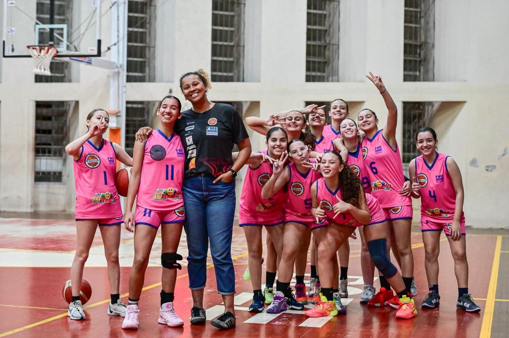

EVOLUÇÃO EM CADA ARREMESSO
FORMAÇÃO EM CADA TREINO
QUEM SOMOS
- A K&F Treinamentos nasceu para transformar a dinâmica do basquete de base.
- Nosso foco vai além de ensinar a bater bola; trabalhamos o desenvolvimento técnico, tático e físico respeitando o ritmo de cada aluno.
- Acreditamos que o rigor dos fundamentos é a base para a criatividade no jogo.
- Aqui formamos atletas com mentalidade resiliente e cidadãos preparados para o trabalho em equipe.
HORÁRIOS
-
MANHÃ
8:30 - 10:00
KIDS - 6 a 11 anos
-
MEIO-DIA
12:15 - 13:15
TEEN - 11 a 15 anos
-
TARDE
16:00 - 17:30
JUVENIL - 15 a 17 anos